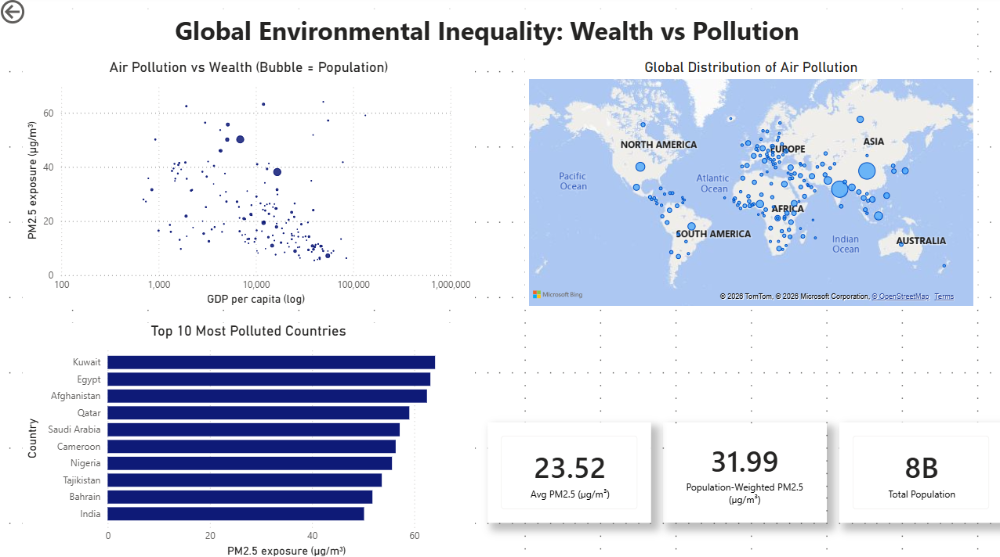
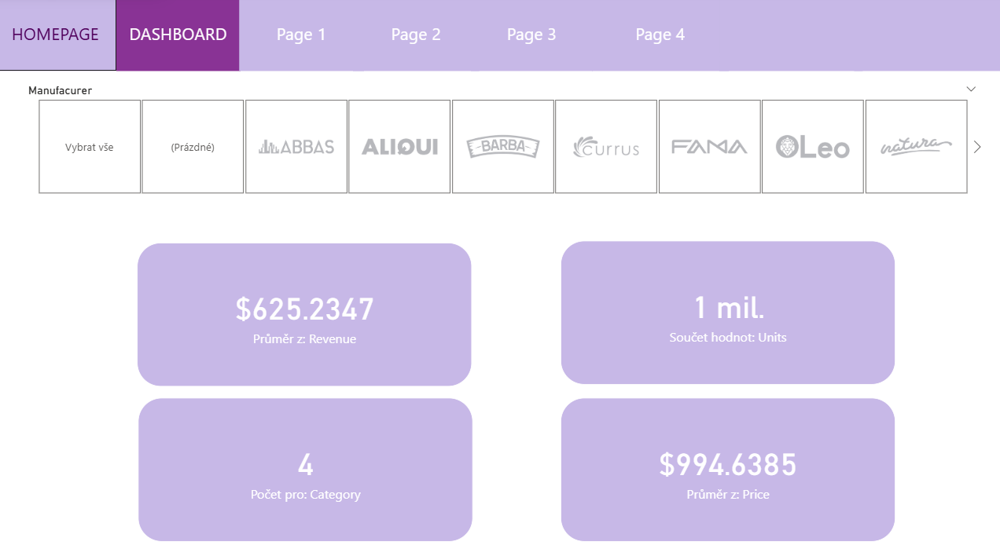
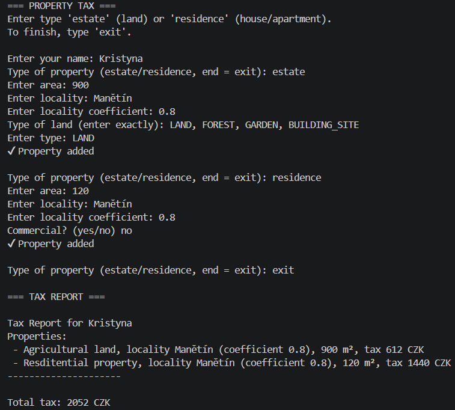

Experience
Senior Ministerial Advisor – National Recovery Plan Coordination
Ministry of Industry and Trade, Prague | Jan 2024 – Jun 2025
- Coordinated National Recovery Plan projects related to industry and trade.
- Liaised with the Delivery Unit, Audit Authority, and European Commission.
- Prepared strategic documents and reports for Steering Committee meetings.
Ministerial Advisor – European Affairs Coordination
Ministry of Agriculture, Prague | Jan 2022 – Dec 2023
- Handled comitology and EU legislative agenda.
- Prepared materials for EU Council, Coreper, and public consultations.
- Maintained contact with EU institutions and Czech Representation in Brussels.
Veterinary Officer – Animal Health Protection Department
State Veterinary Administration, Prague | Jan 2019 – Jan 2022
- Oversaw disease control programs for cattle, sheep, and goats.
- Represented Czech Republic in expert groups at the European Commission.
- Developed national vaccination plans and liaised with breeders.
Featured Projects
🌍 Global Environmental Inequality Analysis

Data analytics project exploring relationships between air pollution, socioeconomic inequality, and population exposure.
Tech stack: Python (pandas, matplotlib), SQL (SQLite), Power BI
View project
📊 Business Sales Insights Dashboard

Interactive Power BI dashboard analyzing sales KPIs, customer trends, and revenue performance.
Tech stack: Power BI, Power Query, DAX
View project
🏠 Object-Oriented Property Tax Calculator

Python OOP application simulating property tax calculations for multiple property types.
Tech stack: Python (OOP, enums, classes)
View project
💻 Personal Portfolio Website
Responsive personal portfolio website built with HTML, CSS, JavaScript, and Bootstrap.
Tech stack: HTML, CSS, JavaScript, Bootstrap
View project